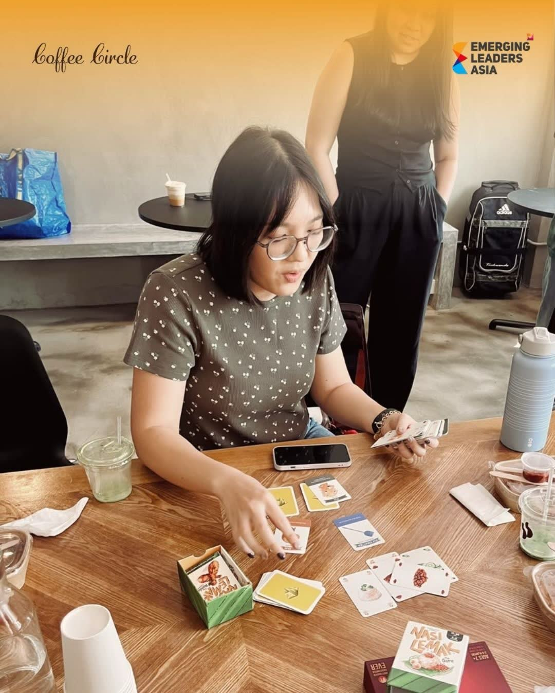

The Initiative Portfolio
Four flagship community initiatives, a people-first culture engine, and a sustainable revenue architecture — every programme converts potential into demonstrated capability.
Community Track
Recurring, high-signal formats with real operating metrics — not one-off events.
Intimate Café-Style Forums · Quarterly
Casual, high-quality dialogue where members share raw, real-world perspectives on career pivots, building ventures and the pressures behind personal branding.
Industry Trend Deep-Dives · Bi-Monthly
Multi-perspective panels featuring strategic ecosystem collaborators discussing macroeconomic shifts and career-defining trends.
Practical Capability Builders · Bi-Annually
Hands-on technical masterclasses and execution sprints designed to deliver immediate, cross-functional capability to early-career leads.
Rapid Career Acceleration · Bi-Annually
High-energy, structured mentorship rotations connecting ambitious young professionals with established corporate leadership networks.
People & Culture Track
Leadership networks only compound when they stay human. The P&C department keeps the ecosystem connected beyond the conference room.
Revenue & Business Development Track
Diversified revenue pillars keep the ecosystem independent, professional and built to last.
Standardised, professional paid subscription toolkits giving members structured career assets and frameworks.
Premium employer branding setups connecting corporate stakeholders with Asia's most engaged young-talent audience.
Strategic B2B talent channels routing vetted, high-potential alumni toward corporate partners who need them.
Bring your organisation to our stages — as a speaker, collaborator or strategic stakeholder.
Start the Conversation